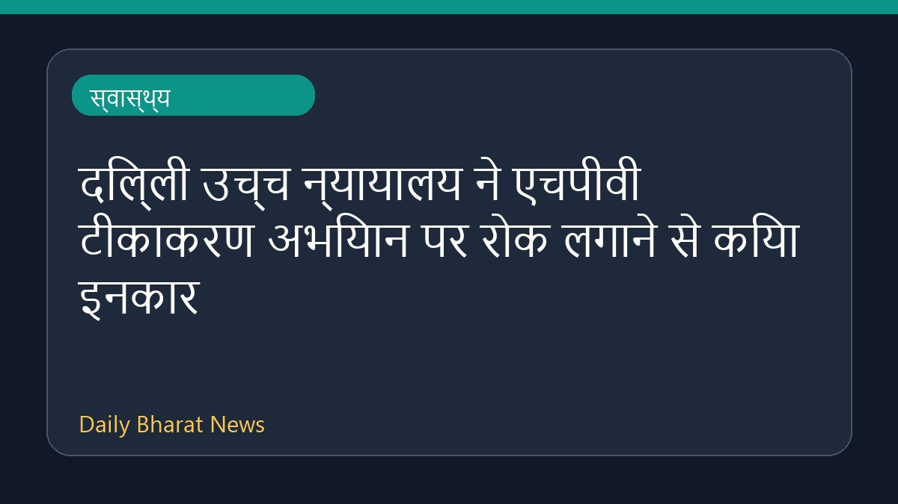

दिल्ली उच्च न्यायालय ने एचपीवी टीकाकरण अभियान पर रोक लगाने से किया इनकार

दिल्ली उच्च न्यायालय ने एचपीवी टीकाकरण अभियान पर रोक लगाने से इनकार कर दिया है और इस मामले में केंद्र सरकार से जवाब मांगा है। अदालत में सुनवाई के दौरान केंद्र ने आश्वासन दिया कि यह टीका सुरक्षित है। अधिकारियों के अनुसार, लगभग छप्पन लाख एचपीवी टीके की खुराक दिए जाने के बाद एक सौ बीस प्रतिकूल घटनाओं की सूचना मिली थी। उच्च न्यायालय ने टीकाकरण अभियान जारी रखने को कहा है, साथ ही अर्ध-विकसित टीकों को लेकर सतर्क रहने की बात भी कही है। इस मामले से जुड़े अन्य विवरण अभी सीमित हैं।
मूल स्रोत: Health News Sources
Delhi HC declines to stay HPV vaccination drive, seeks Centre’s reply - The Hindu ↗
Delhi HC declines to stay HPV vaccination drive, seeks Centre’s reply - The Hindu ↗